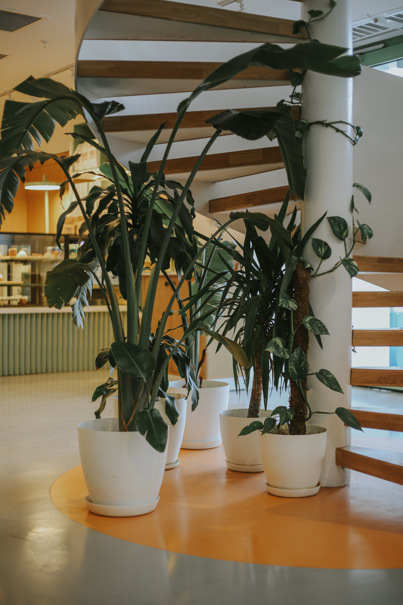

4 Easy Plants for Beginners

Plants make our homes and gardens look beautiful. Some plants are easy to grow and care for. Here are four plants that beginners can try.
1. Money Plant
Money Plant is a popular plant. It has green leaves and can grow in a pot. It needs some sunlight and regular watering. It is easy to care for.
2. Aloe Vera
Aloe Vera is a green plant with thick leaves. It does not need much water. Keep it in a place with good sunlight. Do not water it too often.
3. Snake Plant
Snake Plant has long green leaves. It can grow in different indoor places. It needs little water and is easy to care for.
4. Rose Plant
Roses are beautiful flowers. They come in different colors like red, pink, and white. Rose plants need sunlight and regular watering. They make gardens look colorful and beautiful.
Conclusion
These four plants are good choices for beginners. Give your plants enough sunlight, water and care. They can make your home and garden more beautiful.